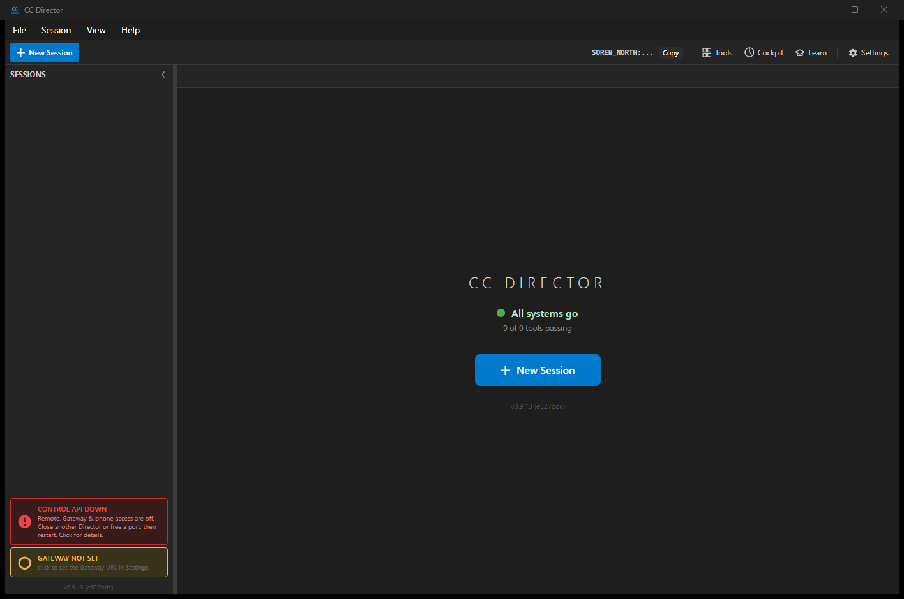
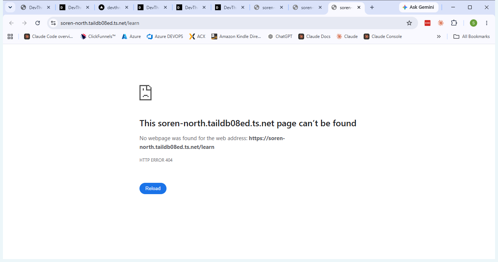
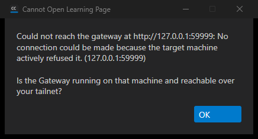

cc-director13.exe),
launched via the per-slot scheduled task; Control API came up on port 7879.DEVTHROTTLE_TEST_SEED_TOKEN (the app's own mechanism) to seed a gate-passing
credential so the main window - and the Learn button - became reachable. The seam was removed
after testing; the shared install was returned to its prior logged-out state.| # | Criterion | Expected | Actual (my proof) | Result |
|---|---|---|---|---|
| 1 | Director main window exposes a visible Help/Learn control. | A Learn button/menu item is visible in the Director main window. | A Learn button (graduation-cap icon + "Learn" label) is in the top-right toolbar
between Cockpit and Settings. See qa-director-main.png (build hash e627bdc =
my checkout HEAD). |
PASS |
| 2 | Activating it opens the default browser to {cockpitBase}/learn (resolved via
CockpitUrlResolver), with a FileLog line recording the resolved URL. |
Browser opens to {cockpitBase}/learn; resolved URL is logged. |
Clicking Learn resolved the Cockpit front door from the configured gateway and opened the
default browser (Chrome) to exactly
https://soren-north.taildb08ed.ts.net/learn - see
qa-browser-learn-url.png. FileLog:
[MainWindow] BtnLearn_Click: opening https://soren-north.taildb08ed.ts.net/learn (up=True, baseUrl=http://soren-north.taildb08ed.ts.net:7878).
The page returns HTTP 404 only because dependency #472 (which ships the /learn
route) has not merged yet; the button's contract - resolve the front door and open
{frontDoor}/learn - is proven correct. |
PASS |
| 3 | When no Gateway/Cockpit is reachable, activating it shows an explicit message (reusing the Gateway-tray hint) and does not silently do nothing or crash. FileLog line captured. | An explicit "could not reach the gateway" message; no silent no-op, no crash. | With the gateway pointed at an unreachable URL, clicking Learn showed a modal dialog
"Cannot Open Learning Page":
Could not reach the gateway at http://127.0.0.1:59999: No connection could be made because the target machine actively refused it. (127.0.0.1:59999) Is the Gateway running on that machine and reachable over your tailnet?
See qa-not-reachable-dialog.png. No crash (the Director stayed alive). FileLog:
[MainWindow] BtnLearn_Click FAILED (baseUrl=http://127.0.0.1:59999): No connection could be made ... |
PASS |
| 4 | Control complies with docs/VisualStyle.md and matches existing toolbar/menu styling. | Consistent toolbar styling. | The Learn button uses the shared toolbarBtn style, sits in the same toolbar
group as Tools / Cockpit / Settings with matching icon+label layout and spacing
(qa-director-main.png); the failure dialog uses the standard dark-theme
MessageDialog (qa-not-reachable-dialog.png). |
PASS |
CcDirector.Avalonia.Tests suite: 70 passed, 0 failed (including the 4
new LearnButtonUrlTests).docs/cencon/ updates.QA-produced (this report):


